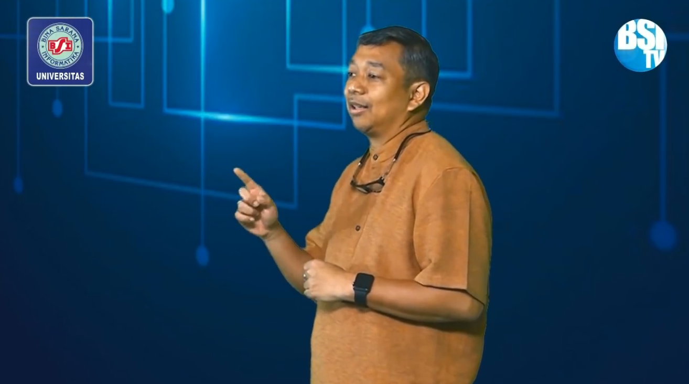

Blog > [Tugas 1] Resume Video Konsep Dasar Teknologi Informasi
[Tugas 1] Resume Video Konsep Dasar Teknologi Informasi
Zaldi
10:32 AM
Assalamualaikum Wr.wb, perkenalkan nama saya Muhammad Zaldi Adithya (10200028) saya dari kelas 10.1A.11 jurusan RPL Universitas BSI Jatiwaringin, Post ini di upload demi kepentingan tugas materi PTIK.
1. Bagaimana tanggapan anda mengenai video instruksional Pertemuan 1?
Jawab : Menurut saya, materi yang disampaikan dalam video diatas sangatlah benar & tepat sasaran, sesuai di video di atas di jelaskan bahwa pada zaman dulu kita butuh usaha yang lebih besar dalam melakukan berbagai hal, namun dengan adanya digitalisasi semua hal dapat dilakukan dengan lebih mudah dan efisien
2. Apa Kesimpulan yang anda dapatkan dari penjelasan mengenai Konsep Teknologi Informasi dan Komunikasi?
Jawab : Era digitalisasi banyak membawa dampak positif dalam berbagai hal, dampak yang paling dapat kita rasakan yaitu kemudahan akses ilmu / informasi yang dapat sangat mudah kita dapatkan sehingga usaha & waktu yang dibutuhkan dapat lebih efisien.
3. Jelaskan bagaimana peranan Teknologi Informasi dalam Bidang Kesehatan, Militer/Pertahanan, Pendidikan, Transportasi, Pertanian, Kelautan, Bisnis, Pemerintah? (*Pilih satu bidang saja)
Jawab : Pernanan Teknologi Informasi dalam bidang pendidikan sangat penting, kenapa demikian ? khusus nya dimasa pandemi ini dimana orang-orang dihimbau untuk tidak banyak beraktifitas diluar rumah & melakukan social distancing, sehingga aktifitas belajar mengajar secara tatap muka langsung terpaksa dihentikan, namun hal tersebut tidak menghentinkan proses belajar mengajar, karena proses belajar mengajar tatap muka tersebut dapat bergeser menjadi belajar mengajar online dengan berbagai media online yang ada, sehingga para pelajar tetap dapat mendapatkan akses ilmu meski mereka berada dirumah.
4. Jelaskan yang kalian ketahui tentang Aspek Komputerisasi, Klasifikasi Komputer dan Generasi Komputer?
Jawab :
5. Jelaskan pendapat anda, Mengapa Peranan Teknologi menjadi sangat penting di era saat ini?
Jawab : Peranan teknologi sangat penting pada era ini, karena dengan adanya teknologi semua hal dalam berbagai bidang dapat memiliki kemudahan dalam semua pekerjaan nya, sebagai contoh adalah berdagang, pada zaman dahulu untuk berdagang kita memerlukan modal untuk membeli hal yang akan kita mau jual, modal sewa tempat, modal listrik, modal merekrut karyawan dan lainnya. namun dengan adanyakan perkembangan teknologi yang sangat pesat biaya-biaya tersebut dapat dipangkas menjadi hanya biaya membeli produk, biaya membeli kuota dan biaya kurir saja, tentunya hal tersebut dapat menghemat banyak modal, efesiensi waktu dan tenaga. peranan teknologi juga berlaku di berbagai macam sektor, dapat dikatakan bahwa peranan teknologi sudah tidak tergantinkan saat ini, tapi kita sebagai manusia yang bijak harus dapat membina diri agar kita menjadi orang yang mengendalikan teknologi bukan teknologi yang mengendalikan kita.
Popular

[Tugas 1] Resume Video Konsep Dasar Tek...
Zaldi
10:32 AM